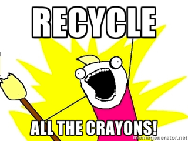

Here is a sneak preview of what we have planned for Maker Faire. Make sure you come visit us! Sunday, Marxh 16, 2014 from 11 AM to 4 PM at South Lakes High School and Hughes Middle School!
How do you teach kids about Internet of Things concepts? By connecting things to Minecraft! We're going to have a bunch of Minecraft stations connected to a server, where kids can come and run around and play with things in the game that are connected to things in the real world.
Some of the things we're working on include:
This was a big hit the first time we did it, and we're going to be doing it even bigger this time! How much bigger? I recently placed an order for 2,000 LEDs!
If you are a parent, I can pretty much guarantee that you have a box of broken crayons sitting around your house somewhere! Bring them with you to MakerFaire and make them even better with our Crayon Recycler! Star Crayons! Mustache Crayons! Robot Crayons!
I can hear you saying "Wow, that's great? What else do you have planned?", and I'm glad you asked! One of the things that I've always thought that Super Novas needed was a mascot, otherwise Super Novas t-shirts would be boring, and we can't have boring! So, meet the new Super Novas mascot!
Yes! There are other things in the works too! But you'll have to show up to find out about the rest of them!